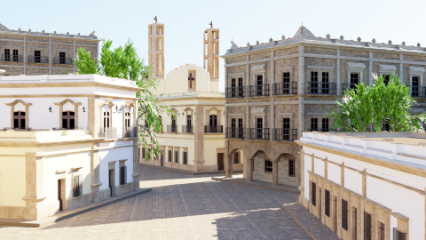
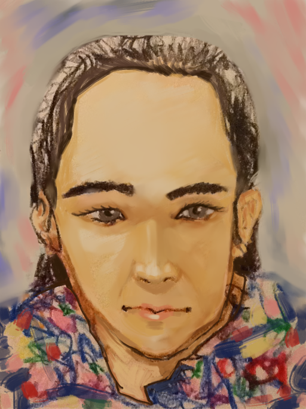

Oliver Martínez es un Artista que maneja técnicas digitales y análogas.
En la pintura tradicional maneja el óleo, la pintura acrilica,
la tinta china y la acuarela, el lápiz y el dibujo.
En el diseño gráfico digital, maneja los programas vectoriales,
los pixeles y programas de modelado y renderizado en 3D.
También sabe interpretar música en el piano, componer y cantar diversos estilos.
Es un valor agregado que utiliza y comprende
los programas de edición de audio y de vídeo.

Música compuesta por Oliver Martínez
(Μια Πολυφωνία για την Ελλάδα.
Esta es la traducción del español al idioma griego